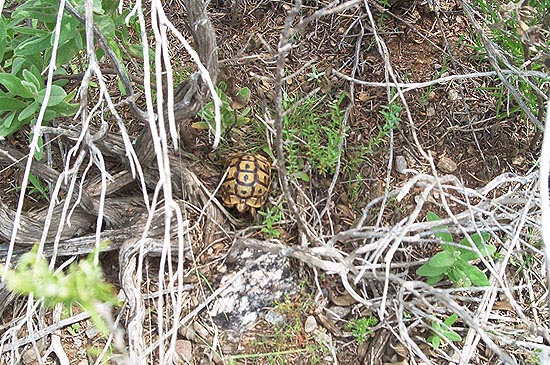
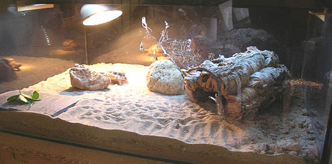
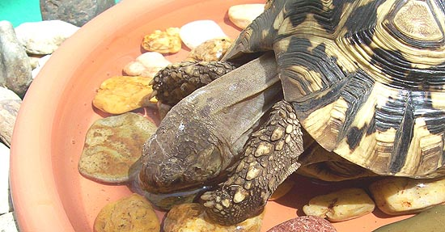
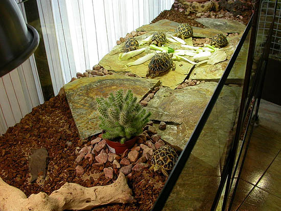
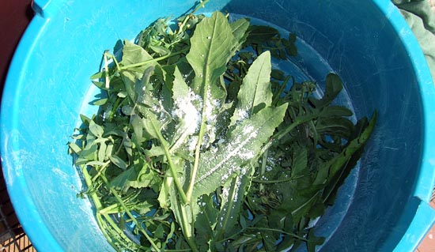

|
MANTENIMIENTO EN CAUTIVERIO DE TORTUGAS TERRESTRES
Aída Rodríguez, 2006
En
este artículo hablaremos de las condiciones generales de mantenimiento
en interiores de las especies de tortugas terrestres más comúnmente
encontradas en cautiverio: Tortuga mora (Testudo graeca graeca
e ibera), Tortuga marginada o de Grecia (Testudo marginata),
Tortuga mediterranea de Herman (Testudo hermanni), Tortuga
egipcia (Testudo kleinmanni), Tortuga Rusa (Testudo
Horsfieldii), Tortuga leopardo (Geochelone pardalis),
Tortuga africana de espolones (Geochelone sulcata), Tortuga
estrellada de la India (Geochelone elegans), Tortuga del
desierto (Gopherus agasizzi), Tortuga de Texas o Tamaulipas (Gopherus
berlandieri), etc.

Juvenil de Testudo graeca en su medio natural (Marcos Martínez).
Las tortugas terrestres viven en lugares que presentan temperaturas
cálidas al menos durante una buena parte del año, con suelos arenosos,
silíceos y otros semejantes, bien drenados. Aún cuando habitan en
zonas desérticas, semidesérticas, sabanas o praderas con poca humedad
y temperaturas de hasta más de 40ºC, la mayor parte del día, sobre
todo en las horas de más calor, se guarecen en madrigueras, oquedades
del terreno o a la sombra de arbustos en los que la temperatura y la
humedad son más benignas (25-30ºC y 50-70% respectivamente). Su dieta
se basa principalmente en hojas y tallos de plantas anuales o perennes
propias de la región (gramíneas -pastos- y leguminosas en su mayoría),
muy poca fruta, y ocasionalmente consumen proteína animal en forma de
heces de mamíferos, huesos blanqueados al sol, carroña y algún
invertebrado. Suelen beber siempre que encuentran agua disponible y
toman largos baños en charcos y en la lluvia de días cálidos.
Cuando mantenemos alguna de estas especies en cautiverio es necesario
reproducir su hábitat y alimentación lo más fielmente posible para
lograr un óptimo desarrollo del animal. Idealmente, las tortugas
deberían ser mantenidas en recintos exteriores apropiados durante todo
o la mayor parte del año, pero cuando esto no es posible se les deben
proporcionar instalaciones adecuadas en interiores.
1. Alojamiento.

Testudo kleinmanni (Fernando Pérez).
Debe disponerse de un terrario de dimensiones apropiadas al tamaño del
animal, contando con que mientras más espacio tenga, podrá realizar
más ejercicio tan necesario para fortalecer sus músculos, fijar calcio
en sus huesos y acumular menos grasa. El espacio debe ser bien
ventilado pero que no permita corrientes de aire, lo que se logra
instalando rejillas de ventilación a diferentes alturas o utilizando
un espacio amplio y abierto, como una mesa de tortugas. Las paredes
deben tener una altura suficiente para que la tortuga no pueda escapar
y ser bastante lisas para evitar que la tortuga trepe, sobre todo en
las esquinas, ya que corre el riesgo de escapar o volcarse,
situaciones ambas que pueden resultar fatales. Para este fin pueden
utilizarse cajas bajocama plásticas de un tamaño adecuado, o bien,
hacer a medida cajones de madera, contrachapado, metal, PVC,
metacrilato (acrílicos), etc. Las urnas de cristal y los acuarios
cerrados tal y como salen directamente de la tienda no son adecuados
para estas especies ya que suelen ser pequeños, retienen demasiada
humedad y carecen de ventilación, pero si se realizan adaptaciones o
se utilizan los nuevos modelos que cuentan con dichas cualidades (Terrasimcos©),
pueden dar muy buenos resultados, además de ser estéticos.
Debemos asegurarnos de que las inquilinas del terrario no puedan ser
molestadas ni lastimadas por las mascotas familiares, niños pequeños,
etc., proporcionando una cubierta que permita una buena ventilación
(por ejemplo malla de alambre).
2. Substrato.
Hay
varios tipos de sustratos que se han utilizado a través del tiempo,
cada uno resultando con ventajas y desventajas. Uno de los más
recomendables y económicos, es una mezcla de tierra de jardín y arena
(de la utilizada para los cajones en que juegan los niños). La tierra
debe esterilizarse calentándola durante 20 minutos a 175ºC en hornos
de gas o eléctricos, o durante 15 minutos a potencia máxima en el de
microondas. Esto destruirá casi todos los microorganismos presentes
que pudieran ser nocivos para las tortugas. La tierra debe estar libre
de plaguicidas y fertilizantes, y no contener materiales que si fueran
ingeridos pudiesen causar una obstrucción intestinal. Debe evitarse
el uso de sustratos a base de maderas aromáticas como el pino y el
cedro, ya que contienen fenoles que a la larga podrían causar daño
hepático.
Deben proporcionarse también uno o varios refugios en los que la
tortuga pueda mantenerse apartada de la vista y que pueda proporcionarle
una sensación de seguridad. (Ver Agua y Humedad).
3. Iluminación.
La
fuente de iluminación a utilizar debe proporcionar una luz de calidad
que permita a las tortugas apreciar los colores de los alimentos, a la
vez que suministre una cantidad suficiente de radiación ultravioleta A
(UVA) que los reptiles necesitan para identificar alimentos,
socialización, incrementar su actividad, reconocimiento de las
estaciones del año, etc. También debe brindar una cantidad
adecuada de radiación ultravioleta B (UVB) que permita la adecuada
síntesis de vitamina D, lo que conlleva a una adecuada absorción del
calcio de la dieta. Esto puede lograrse con el empleo de tubos
fluorescentes especiales para reptiles que emitan un 5-10% de UVB, los
cuales deben cambiarse cada 6 meses ya que con el uso van perdiendo
inadvertidamente su capacidad de emitir dicha radiación. Los tubos
deben colocarse a una distancia máxima de 20-30cm del sustrato para
que sean efectivos.
Otra buena opción son las lámparas de vapor de mercurio especiales
para reptiles. Proporcionan luz visible, radiación UVA, UVB y calor a
la vez. Deben colocarse a 30 – 40 cm. por encima del lugar donde
llegaría el punto más alto del caparazón del animal más grande,
siempre verticalmente para que su funcionamiento sea óptimo y también
para que los ojos de las tortugas se mantengan protegidos por los
párpados y su propia posición en la cabeza. Debe tenerse un espacio
suficiente en el terrario para que el animal pueda alejarse a 60 cm. o
más de la lámpara y tener algún refugio. A diferencia de los tubos
fluorescentes, estas lámparas al parecer no pierden tan pronto su capacidad de
emitir UVB con el paso del tiempo (probadas hasta por 15,000 horas). Siempre
debe medirse la temperatura directamente por debajo de la lámpara a la
altura en que estaría la tortuga para evitar quemaduras y
sobrecalentamiento. Cabe aclarar que las lámparas utilizadas deben ser
de las diseñadas especialmente para reptiles ( Active UV-Heat©,
Powersun©, etc), ya que éstas están construidas especialmente para
permitir el paso de la radiación UVA y UVB, lo
que no sucede con otras lámparas de vapor de mercurio que pueden ser
muy semejantes, pero no cuentan con esta cualidad. También debe
tomarse en cuenta que no debe colocarse ningún material entre la
lámpara y el terrario, salvo si acaso, malla, pues cualquier otro
material bloqueará el paso de la radiación.
|
 |
 |
Lámpara de vapor de mercurio Powersun®
y tubo fluorescente Reptisun®. Ambos de Zoomed®.
La
radiación UVB en altas cantidades tiene la capacidad de dañar las
retinas, por lo que no se debe fijar la vista en ninguna lámpara que
la emita, incluso es conveniente poner un portalámpara o pantalla que
evite que se mire a la lámpara directamente, aún por períodos cortos
pero frecuentes.
Para que la tortuga reciba la radiación suficiente, las lámparas deben
permanecer encendidas al menos durante 6 horas al día, pero es
necesario mantener éstas u otras luces fluorescentes o incandescentes
durante 10-15 horas para completar el fotoperiodo adecuado a la
especie y la estación del año.
4. Temperatura.
Las
tortugas son animales poiquilotermos o de “sangre fría” y no regulan
internamente su temperatura corporal como lo hacen los animales
homeotermos o de “sangre caliente”, como los mamíferos. Para poder
regular su temperatura de acercan o se alejan de fuentes de calor
(principalmente el sol). Esta termorregulación es indispensable para
que el animal logre la temperatura corporal óptima, en la que todas
sus funciones biológicas como la digestión y la respuesta inmune
trabajan de la manera más adecuada. Por lo tanto, se les debe
proporcionar una zona cálida (28-32ºC) y otra zona fresca (24-26ºC).
Durante la noche debe procurarse que la temperatura descienda a
20-24ºC. Si se mantiene de manera artificial la temperatura alta
durante todo el día puede favorecerse la deshidratación y la
aparición de infestaciones parasitarias, principalmente en animales
pequeños.
Es conveniente que el calor provenga principalmente de arriba y cerca
de la fuente luminosa ya que para las tortugas es más fácil y natural
ubicarse de esa forma. Para ello se pueden utilizar bombillas
incandescentes (focos), lámparas de cerámica, lámparas de
infrarrojos, placas térmicas o calentadores ambientales cerámicos o
de aceite (nunca de gas, por el riesgo de intoxicación por monóxido de
carbono). Como ya se ha mencionado, las lámparas de vapor de mercurio
son muy adecuadas ya que proporcionan luz, calor y radiación UVB a la
vez, justo como ocurre en la naturaleza. Las de 160w proporcionan más
calor que las de 100w, y una cantidad similar de UVB. Si por la noche
fuese necesario mantener fuentes de calor, es preferible optar por las
que no emiten luz, como la lámpara cerámica, el cable calefactor o las
placas térmicas. Siempre debe vigilarse la temperatura de los
terrarios mediante el uso de termómetros, ya sean digitales, de
mercurio o de alcohol, para tener la seguridad de que las temperaturas
se mantienen en los límites deseados y evitar el riesgo de
sobrecalentamiento que puede causar la muerte a las tortugas en poco
tiempo. También hay que verificar que los animales no puedan ponerse
en contacto directamente con la fuente de calor para evitar
quemaduras. Las piedras calefactores (que es preferible no usar
NUNCA), los cables térmicos y las placas térmicas son especialmente
peligrosos en este aspecto por lo que deben usarse con precaución. Una
forma de controlar aún más las fuentes de calor es mediante el uso de
termostatos independientes de los que a pudiera tener el aparato en
sí.
5. Agua y Humedad Ambiental.
Como ya se ha mencionado, todas las tortugas beben y se bañan cuando
tienen oportunidad, incluso las especies desérticas como Gopherus sp.,
T. kleinmanni, G. sulcata y G. pardalis. En cautiverio, y más aún
cuando se les mantiene en interiores, las luces y los aparatos
calefactores resecan mucho el ambiente llegando a medirse niveles de
humedad de 10% o menores. Como ya se ha señalado, en la naturaleza las
tortugas pasan la mayor parte del tiempo en refugios con una humedad
de 50-80%. Uno de los mayores retos es lograr esa humedad ambiental en
el terrario (medida con un higrómetro) sin anegar el sustrato y
manteniendo la temperatura dentro de los límites mencionados. Las
tortugas necesitan humedad, pero una combinación de ésta con el frío
puede ocasionar serios problemas de salud. Para lograr los niveles
deseados puede pulverizarse con agua el sustrato varias veces al día,
utilizar humidificadores ambientales, mojar completamente el sustrato
de una pequeña zona del terrario, etc. Un método muy eficaz y
utilizado ampliamente con excelentes resultados consiste en crear un
refugio húmedo colocando una esponja mojada sobre un trozo de cerámica
que hace las veces de techo de la guarida (puede ser una teja, o un
tiesto o maceta de barro cocido, etc.) ya sea pulverizando o no el
sustrato dentro del refugio, dependiendo de la humedad lograda. Debe
tenerse cuidado de que la esponja no pueda ser alcanzada y
mordisqueada por las tortugas, debido al riesgo de obstrucción
intestinal.

Stigmochelys pardalis bebiendo (Aída Rodríguez).
Además de la humedad ambiental, es necesario ofrecerles agua para
beber y bañarse en un recipiente en que puedan entrar y salir
fácilmente, en el que el agua les llegue a la altura del plastrón.
Este recipiente puede mantenerse constantemente dentro del terrario o
colocarlo sólo una o dos veces al día metiendo nosotros a la tortuga y
retirando el plato cuando salga. En ocasiones el agua contenida
en los alimento es suficiente para mantenerlas hidratadas y no siempre
desearán beber, pero siempre debemos darles la oportunidad de que lo
hagan. Muchas veces las tortugas defecan mientras se están bañando, lo
que mantiene limpio el sustrato por más tiempo. El agua debe cambiarse
al menos una vez al día o con mayor frecuencia si fuese necesario.
6. Alimentación.
Las
tortugas en libertad consumen una dieta alta en fibra, baja en
proteínas (5-8%) y rica en calcio. La dieta que les proporcionemos
debe igualar en todo lo posible estos parámetros, además de ser
suficiente en cantidad (no sobrealimentar), variada (para aportar las
vitaminas y los micronutrientes contenidos en diversos tipos de
plantas) y lo más fresca posible. Los alimentos deben ofrecerse en un
recipiente que permita un fácil acceso y que evite que se mezclen
con el sustrato (por ejemplo, una piedra laja amplia sobre el
sustrato).

Juveniles de Geochelone elegans comiendo (Marcelo López).
• Dieta general:
Alimentos que pueden ser utilizados a diario:
Hojas y flores de diente de león, cerraja, y obelisco o pacífico (hibiscus
spp); hojas de escarola, llantén, rúcula, malva silvestre, nabo,
canónigos; nopales (palas de chumbera) troceados y sin espinas.
Alimentos que pueden utilizarse una o dos veces por semana en
cantidades pequeñas:
Zanahoria, berros, alfalfa fresca madura, lechuga italiana y romana
(conocida en México como orejona), endibia, hojas de mostaza,
judías verdes (ejotes), alimento preparado para tortugas terrestres
(pienso, pellets), veza, trébol blanco (no confundir con el oxalis o
acedera,
también llamado en México trébol), capuchinas o mastuerzo.
Las
frutas por su alto nivel de carbohidratos y su capacidad para alterar
la flora microbiana responsable de la digestión, debe utilizarse sólo
en pequeñas cantidades una vez a la semana, excepto en G. sulcata,
G. pardalis y T. kleinmanni en quienes es mejor
ofrecerlos sólo una vez al mes o con menor frecuencia: manzana, pera y
uvas (los tres sin semillas), papaya, higos frescos, higos chumbos
(tunas), tomate (jitomate), guayaba, kiwi, mamey, melón cantaloup
(francés), plátano, mango.
Alimentos que pueden ser utilizados en pequeñas cantidades y
sólo muy ocasionalmente o nunca debido a que contienen sustancias no
recomendables o escaso valor nutricional:
Contienen tiocianatos que evitan el correcto funcionamiento de la
glándula Tiroides (bociógenos): Col, brócoli, berza, coles de
Bruselas, coliflor, fresa.
Contienen grandes cantidades de oxalatos que causan intoxicación,
cálculos renales y otros trastornos: acelgas, espinacas,
verdolagas, oxalis o acedera (conocido en México como trébol).
Tienen escaso valor nutricional: pepino,
lechuga iceberg (conocida en México como romanita), sandía.
Contienen gran cantidad de proteínas: alimento comercial para
perros, gatos o tortugas acuáticas, carne de cualquier tipo,
invertebrados, productos y brotes de soja (soya), lácteos, pimiento
morrón.
Contienen demasiadas grasas y/o una inadecuada relación Ca:P
:Brotes de soja (soya), de alfalfa, de brócoli, de amaranto, etc.,
lácteos en general.
Otros (mejor no dar nunca): pan, cereales, grasas.
• Suplementos:
Fibra: La fibra es necesaria para mantener una buena flora
microbiana, mejorar el tránsito intestinal de los alimentos y dar
consistencia a las heces. Puede aumentarse su cantidad en la dieta
proporcionando plantas comestibles y pastos secos triturados
espolvoreados sobre los alimentos frescos.
Calcio y vitamina D: El calcio es necesario para la
formación del caparazón y los huesos, así como para la correcta
realización de otras funciones, como la muscular. La vitamina D
permite una adecuada absorción del calcio de la dieta, por lo que
debemos asegurarnos de que las tortugas puedan fabricar dicha vitamina
al recibir radiación UVB del sol o de lámparas que la produzcan o
bien, suministrarla en forma de suplementos. Este último método
conlleva el riesgo de sobredosificar y causar más problemas, por lo
que es mejor proporcionar la radiación UVB adecuada. El calcio puede
proporcionarse agregando a los alimentos una o dos veces por semana
una pequeña cantidad de polvo de carbonato de calcio o gluconato de
calcio. También puede colocarse un trozo de hueso de sepia en el
terrario para que las tortugas tengan un aporte extra de calcio,
además de entretenerse y evitar el sobrecrecimiento de su pico corneo.

Carbonato cálcico espolvoreado sobre la comida (Marcos Martínez).
Otras
vitaminas y minerales: Debido a la dificultad
para recrear al 100% la dieta de las tortugas en libertad tanto en
contenido como en variedad, muchos criadores suelen suministrar un
complejo vitamínico de calidad. Los suplementos en tabletas para
humanos tipo Centrum©, recién pulverizados y espolvoreados en
pequeñas cantidades sobre la comida una vez a la semana son
ampliamente utilizados con buenos resultados.
• Dietas especiales.
Del 50% al 80% de la dieta de G. pardalis y G. sulcata debe
consistir en pasto fresco o heno de pastos como césped, pasto timothy
(hierba timotea), bermuda (grama), orchad., de trigo, de avena, etc.
Y el restante 20-50% de los alimentos mencionados en la dieta general.
G.
carbonaria y G. denticulada requieren de un 5 a un 10% de su dieta
de proteína de origen animal, 40 a 50% de frutas y 40 a 50% de la
dieta general mencionada.
7. Consideraciones finales.
Los
cuidados básicos aquí descritos han sido realizados por nosotros y
otros criadores con muy buenos resultados con todas las especies
mencionadas. Conforme pasa el tiempo, se hacen nuevos descubrimientos
respecto a la biología y etología de estos maravillosos animales, por
lo que es necesario mantener actualizados nuestros conocimientos con
el afán de proporcionar la mejor calidad de vida a esos seres que
dependen de nosotros para satisfacer sus necesidades.
|